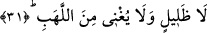

hâlde âyette ifâde buyurulan üç kola ayrılmış dumandan her biri îmânın yukarda
saydığımız üç temel esasından birine karşılık olmuş olur. Bizim bu yapmış olduğumuz
açıklamayı az önce okumuş olduğumuz “Haydi yalanlamış olduğunuz şeye gidin” âyet-
i kerîmesi bizlere göstermektedir. Ancak bu âyet-i kerîmede üç rükünden sâdece kalbin
özelliği olan “yalanlama” sıfatı zikredilmektedir. Bu da sebebsiz değildir. Çünkü insan
kalbi vücûdumuzdaki organların odak noktası ve bütün gücün kaynağıdır. Bu kaynak ve
odak noktası bozulduğunda insanın dili ve diğer organları hep bozulup hasta olur. Şu
hâlde “yalanlama”, kalbin içerisinde gizli bir karanlık demektir. Bu karanlık îmânın dil
ile ikrarının, organlarla amelin terkedilmesi ile oluşan karanlık, dolayısıyla kat kat
kalınlaşan bir karanlık olur. Dünyada iken bâtınî karanlıklar böyle kat kat olunca,
âhirette de zâhirî karanlıklar aynı şekilde kat kat insanı kuşatacaktır. Çünkü her amelin
kıyâmet günü kendine âid bir sıfatı, sûreti ve cesede bürünmüş şahsiyeti olacaktır.
31. (Ama) ne gölgelendiren ne de alevden koruyan bir gölgeye.
“O ne gölgelendirir.” Bu gölge insanı harâretten, sıcaklıktan gölgelemeyecektir.
Gölgenin o gün hiçbir sıcaklıktan; yâni cehennemin harâretinden gölgelendirmemekle
nitelenmesi o kâfirleri kuşatacak olan ateş hâlesine “gölge” adının verilmesinin onlarla
bir alay olduğuna işâret etmek içindir. Çünkü bilindiği üzere “gölge”, insanın
gölgelenmiş olduğu şeyden koruyucu bir vasfa sâhiptir. Gölge, insanı maruz kalmış
olduğu harâretin şiddetinden korur ve serinliği, esintisi ile insana yarar sağlar.
Kâfirlere bu gölgeye doğru koşma emrinin verilmesi, onların bu gölgenin
serinliğinden yararlanmaları ve rahata kavuşmaları için değil, içerisinde yaşamış
oldukları harâret ve azâbı kat kat arttırmak içindir. Çünkü el-Vâkıa sûresinde geçtiği
üzere “zıll/gölge” kelimesi insana herhangi bir sıkıntıdan rahata kavuşma, rahat bulma
imajı vermektedir.
“Ne de alevden korur.” Yâni bu gölge dünya gölgesinin insanı güneşin harâretinden
koruduğu gibi, onları cehennem ateşinin harâretinden korumaz.
İfâdenin anlamı; sizler gölgelemeyen ve fayda verip korumayan gölgeye koşunuz,
şeklinde olur. Tıpkı ihtiyacın kişiyi muhtâc olduğu şeye yaklaştırması gibi, “ğına” da
insanı ondan uzaklaştırır. Öte yandan Arapça’da bir şeyin başka bir şeyden “iğna”sı ile
o kimsenin o şeyden uzaklaştırılması anlamı kazanması mümkündür. Bütün bu
açıklamalardan sonra şöyle diyebiliriz: Bu gölge sizi güneşin harâretinden gölgelemez.
Sizlerden cehennemin alevini savmaz.
Âyette yer alan “el-Leheb”, “ateşin üzerine çıkan alevler” demektir. Ateş
tutuşturulduğunda bu alevler kırmızı, sarı ve yeşil olur.
et-Te’vilat en-Necmiyye’de tefsirini yaptığımız bu âyetler şöyle anlaşılıyor: Ruh/kalp
gölgesi, fayda, etki ve ferahlığı uzun olan gölgedir. Ama nefs ve hevâ gölgesi böyle
değildir.